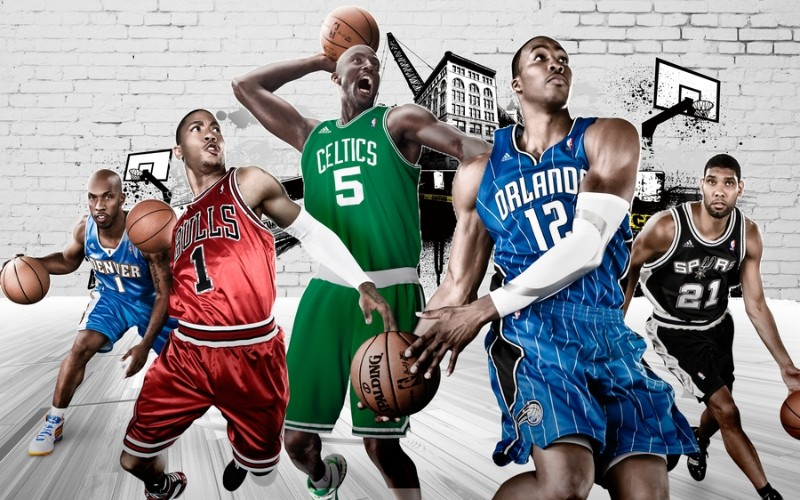
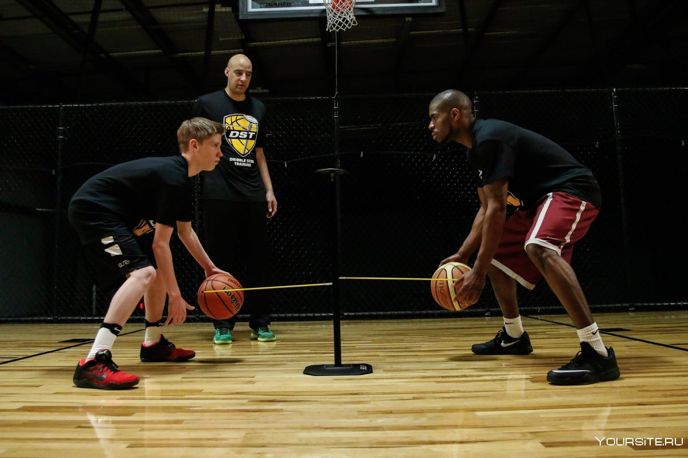

Информация о Баскетболе

Баскетбол — это командный вид спорта, который играется мячом и целью которого является забрасывание мяча в корзину соперника для набора очков. Этот спорт был создан Джеймсом Нейсмитом в 1891 году в США и с тех пор приобрел огромную популярность во всем мире
Вот основные элементы баскетбола:
Площадка:
Баскетбольная игра проводится на прямоугольной площадке с защитными линиями, трехочковой линией и, конечно же, корзинами.
Корзины:
На каждой стороне площадки располагается корзина — высокое металлическое кольцо, через которое нужно забросить мяч. За заброшенный мяч издалека команда получает три очка, ближе к корзине — два очка, а за штрафные броски — одно очко.
Мяч:
Используется специальный мяч для баскетбола, который обычно изготовлен из кожи или резины. Мяч должен быть надут до определенного давления.
Команды:
В баскетбол играют две команды, каждая из которых состоит из пяти игроков на площадке. Есть также запасные игроки, которые могут вступить в игру в любой момент, когда мяч находится вне игры.
Очки:
Главной целью игры является забрасывание мяча в корзину соперника. Каждое успешное попадание приносит команде очки.
Пасы и движение:
Игроки могут передвигаться по площадке, давать передачи друг другу и пытаться создать возможности для забросов. Важна командная работа, так как баскетбол — это игра не только индивидуальных навыков, но и сотрудничества.
Защита:
Команды также должны активно защищаться, не позволяя соперникам легко забрасывать мяч в свою корзину. Это включает блокировку бросков, перехваты мяча и оборонительные тактики.
Время:
Игра разбита на четверти, обычно по 12 минут в профессиональном баскетболе. Команды пытаются набрать как можно больше очков за отведенное время.
Баскетбол является динамичным и захватывающим видом спорта, который требует хорошей физической формы, технических навыков и тактической обдуманности.
советы

Стать баскетболистом требует усиленной тренировки, преданности и развития необходимых навыков. Вот несколько шагов, которые могут помочь вам достичь этой цели:
Освоение основ:
Начните с изучения основ баскетбола, таких как правила, техники бросков, пасов, дриблинга и защиты. Это позволит вам иметь хорошее понимание игры.
Тренировка:
Регулярная тренировка игровых навыков является ключевым фактором для успеха. Работайте над техникой бросков, подачей и перехватами мяча. Также уделяйте внимание физической подготовке, включая выносливость, скорость и силу.
Командные тренировки:
Присоединитесь к баскетбольной команде в вашей школе, университете или местной спортивной организации. Тренировки в коллективе помогут развить командную работу и игровые тактики.
Участие в соревнованиях:
Принимайте участие в местных лигах и соревнованиях, чтобы получить реальный игровой опыт. Это поможет вам применить на практике то, что вы учились на тренировках.
Обучение от профессионалов:
Примите участие в тренировках, проводимых опытными тренерами и баскетболистами. Они могут предоставить вам ценные советы и помощь в развитии навыков.
Личное развитие:
Работайте над самосовершенствованием и улучшением своих слабых сторон. Анализируйте свои игры, чтобы выявить ошибки и прогресс.
Постоянство и упорство:
Путь к успеху требует времени и усилий. Будьте готовы сталкиваться с неудачами и перерывами, но не теряйте мотивацию и продолжайте работать над собой.
Образ жизни:
Помимо тренировок, важно вести здоровый образ жизни. Правильное питание, достаточный сон и регулярные тренировки помогут вам быть в форме для игр.
Образование:
Не забывайте о получении образования. Учеба и спорт могут успешно сочетаться, и образование будет полезно в случае, если спортивная карьера не сложится как планировалось.
Амбиции и мечты:
Верьте в себя и свои возможности. Стремитесь к своим целям и мечтам, и с течением времени вы сможете достичь успеха в баскетболе.
Помните, что становление баскетболистом требует усердной работы и постоянного развития. Однако, с правильным подходом и страстью к игре, вы можете добиться замечательных результатов.